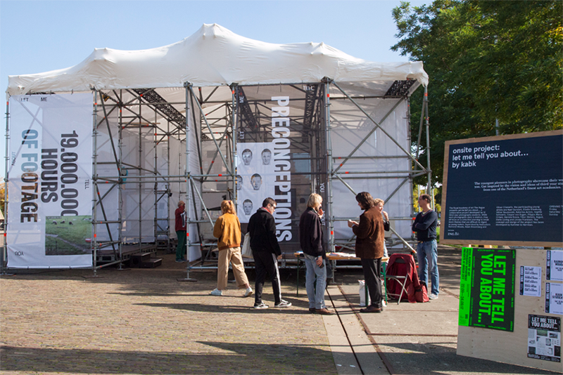

1/9

2/9

2/9

3/9

2/12
9/9
Viewer discretion is advised: Flashing Effects!!!
During my internship at Kummer & Herrman we faced a challange of organizing an exhibition for young artists of a third year Photography Department from The Royal Academy of Art, the Hague at the 'Unseen'. Each of 12 students had their own photographic often based on personal experience stories to tell. Our main goal was to build a ‘stage’ prominent enough to stand out and attract the audience, but at the same time neutral to some extent, not interfering with students’ personal vision. We wanted to provide a separate space for each of them to be able to express themselves. Limitations like the open space (a lot of participants had TV screens and other equipment) set some extra challange for the exhibition design. Our work resulted in the use of the names of the project as a base for the identity. 'Let Me Tell You About...' would always end with one of the names of the projects. As part of the promotion for the event a video teaser based on the same principle was made along with a serie of posters, handout, facebook and other social media banners. Instagram became a platform for the audiotour (@let.me.tell.you.about) and documentation of the exhibition.